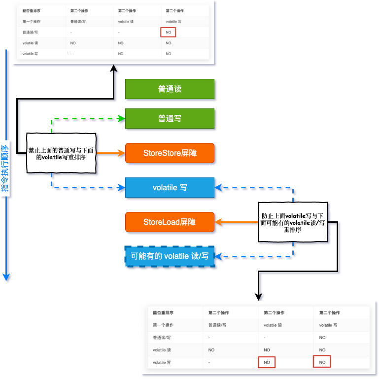
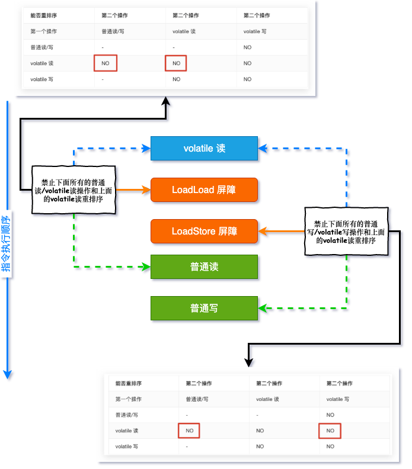
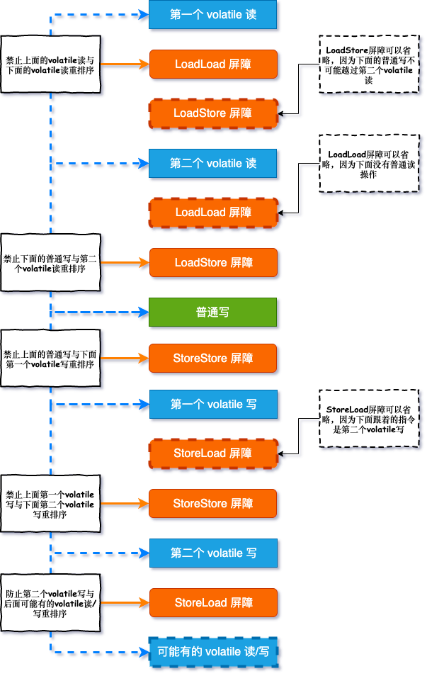
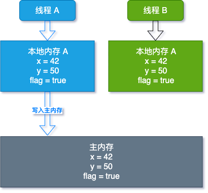
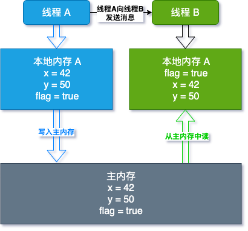

提前发现更多精彩内容，请访问 个人博客
提前发现更多精彩内容，请访问 个人博客
提前发现更多精彩内容，请访问 个人博客
在 可见性有序性，Happens-before来搞定 文章中，happens-before 的原则之一: volatile变量规则
对一个 volatile 域的写, happens-before 于任意后续对这个 volatile 域的读
按理说了解了这个规则，对 volatile 的使用就已经足够了，但是面试官可是喜欢刨根问到底的，为了更透彻的了解 volatile 的内存语义与读写语义，为了面试多一些谈资进而获得一些加分项，同时尽早填补前序文章留下的坑，于是乎这篇文章就这样尴尬的诞生了
下面的表格你还记得吗？(是的，你记得😂)
| 能否重排序 | 第二个操作 | 第二个操作 | 第二个操作 |
|---|---|---|---|
| 第一个操作 | 普通读/写 | volatile 读 | volatile 写 |
| 普通读/写 | - | - | NO |
| volatile 读 | NO | NO | NO |
| volatile 写 | - | NO | NO |
上面的表格是 JMM 针对编译器定制的 volatile 重排序的规则，那 JMM 是怎样禁止重排序的呢？答案是内存屏障
无论你听过这个名词与否都没关系，很简单，且看
为了实现 volatile 的内存语义，编译器在生成字节码时，会在指令序列中插入内存屏障来禁止特定类型的处理器重排序
这句话有点抽象，试着想象内存屏障是一面高墙，如果两个变量之间有这个屏障，那么他们就不能互换位置(重排序)了，变量有读(Load)有写(Store)，操作有前有后，JMM 就将内存屏障插入策略分为 4 种:
1 和 2 用图形描述以及对应表格规则就是下面这个样子了:

3 和 4 用图形描述以及对应表格规则就是下面这个样子了:

其实图形也是表格内容的体现，只不过告诉大家内存屏障是如何禁止指令重排序的，所以大家只要牢记表格内容即可
一段程序的读写通常不会像上面两种情况这样简单，这些屏障组合起来如何使用呢？其实一点都不难，我们只需要将这些指令带入到文章开头的表格中，然后再按照程序顺序拼接指令就好了
来看一小段程序:
public class VolatileBarrierExample {
private int a;
private volatile int v1 = 1;
private volatile int v2 = 2;
void readAndWrite(){
int i = v1; //第一个volatile读
int j = v2; //第二个volatile读
a = i + j; //普通写
v1 = i + 1; //第一个volatile写
v2 = j * 2; //第二个volatile写
}
}将屏障指令带入到程序就是这个样子:

我们将上图分几个角度来看:
到这里你应该了解了 volatile 是如何通过内存屏障保证程序不被"擅自"排序的，那 volatile 是如何保证可见性的呢？
回顾一下之前文章内容中的程序，假定线程 A 先执行 writer 方法，随后线程 B 执行 reader 方法，:
public class ReorderExample {
private int x = 0;
private int y = 1;
private volatile boolean flag = false;
public void writer(){
x = 42; //1
y = 50; //2
flag = true; //3
}
public void reader(){
if (flag){ //4
System.out.println("x:" + x); //5
System.out.println("y:" + y); //6
}
}
}到这里你是否还记得之前说过的 JMM，是的，你还记得😂，当线程 A 执行 writer 方法时，且看下图:

线程 A 将本地内存更改的变量写回到主内存中
volatile 读的内存语义:
当读一个 volatile 变量时, JMM 会把该线程对应的本地内存置为无效。线程接下来将从主内存中读取共享变量。
所以当线程 B 执行 reader 方法时，图形结构就变成了这个样子:

线程 B 本地内存变量无效，从主内存中读取变量到本地内存中，也就得到了线程 A 更改后的结果，这就是 volatile 是如何保证可见性的
如果你看过前面的文章你就不难理解上面的两张图了，综合起来说:
到这里，面试 volatile 时，你应该有一些谈资了，同时也对 volatile 的语义有了更深层次的了解
之前的文章提到过这样一句话:
从内存语义的角度来说, volatile 的
写-读与锁的释放-获取有相同的内存效果；volatile 写和锁的释放有相同的内存语义; volatile 读与锁的获取有相同的内存语义
记住文中最后两张图， 当我们说到 synchronized 的时候，你就会猛的理解这句话的含义了, 感兴趣的可以自己先了解 synchronized 的写-读语义
接下来我们就聊一聊锁相关的内容了，敬请期待...
https://tool.lu 是一款集成了非常多功能的在线工具，基本满足日常开发所需
欢迎持续关注公众号：「日拱一兵」
- 前沿 Java 技术干货分享
- 高效工具汇总 | 回复「工具」
- 面试问题分析与解答
- 技术资料领取 | 回复「资料」
以读侦探小说思维轻松趣味学习 Java 技术栈相关知识，本着将复杂问题简单化，抽象问题具体化和图形化原则逐步分解技术问题，技术持续更新，请持续关注......